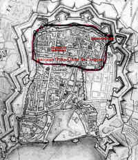

|

French version
HOME
ORIGINS
ENGAGÉ
MARRIAGE
TRAVEL
FAMILY
DEATH
SÉBASTIENNE
DESCENDANTS
SOURCES

SIGN
MY GUEST
BOOK
| |
|

MATHIEU'S
ORIGINS
|
| L'Aunis,
country of Mathieu Choret
Mathieu
Choret and Jeanne Serre had, in the early 1620s, a son to whom they gave
the same first name as his father: Mathieu
According
to several web sources, of which the Fichier Origine is one, Mathieu was
a native of the Notre-Dame-de-Cougnes parish in La Rochelle. However,
the documents are often imprecise and even contradictory over the
origins of our ancestors. Therefore, while waiting to see a birth
certificate, we can at least confirm that Mathieu, if he wasn’t born
in La Rochelle, was married there.
This parish is the oldest one in the town, dating back to the 12th
century. The churches in the town, including the one of Notre-Dame, were
destroyed in 1568 during the religious wars. Mathieu’s baptism,
therefore, probably occurred at Saint-Marguerite Chapel, the place of
worship for La Rochelle citizens for many years. 
Sainte-Marguerite
Chapel

Notre-Dame
Church; its reconstruction started in 1653, after Mathieu’s departure
for Canada.
 La Rochelle
was the capital of l’Aunis, a
province of the old French empire, and bordered the Atlantic, between
the Poitou and Saintonge regions. The city and four other parishes were
protected with fortifications designed by Vauban (a famed French
Marshal).
Limited
by the Marais Poitevin (a large marsh region) and the Charente River, l’Aunis
is made up of a limestone plateau that forms coastal cliffs in some parts
(like the one facing Ré Island, for example). The smallest province in
France, l’Aunis is a flat country which distinguishes itself strongly
from neighboring provinces, particularly through its rural history and the
eminent role of La Rochelle.

|
|
The
History of L'Aunis and of La Rochelle

|
|
Several traces
have been found that testify to old human establishment dating back to
possibly Neolithic times.
Throughout its history, this province has been an issue between rivaling
nations and princes. It was under the protection of the dukes of Aquitaine when La Rochelle became l’Aunis’ capital. It
came into the possession of the English through the marriage of Aliénor
of Aquitaine and the King of England in 1152. The city allied itself on
the side of John Lackland (remember the era of Robin Hood: faithful to
King Richard Lionheart of England who died in a crusade, and his brother,
John Lackland, who tries to seize the crown) in the conflict against the
French crown. After the first siege of La Rochelle, l’Aunis
passed under the control of the French kings.
However, in
the second half of the 16th century, l’Aunis chose the Protestant
camp and an alliance with England. From 1551-1552, La Rochelle
revolted against François I during the extension of the gabelles (a
kind of tax). Ravaged by the religious wars, La Rochelle became a
figurative capital of the Protestants.
 Beginning
in 1620, Louis XIII, by the advice of his minister Richelieu, led an
eager fight against the Protestants; but it was only in 1627 that he
attacked La Rochelle. Beginning
in 1620, Louis XIII, by the advice of his minister Richelieu, led an
eager fight against the Protestants; but it was only in 1627 that he
attacked La Rochelle.
The besieged city
didn’t hesitate to ask for help from England, who used this pretext to
launch an assault against France which destroyed the naval fleet France
had built. War was declared. England also seized this occasion to launch
the Kirk brothers in an assault of the draft posts of New France, hoping
to enrich itself with the fur trade.
The
clashes between the Catholics and Protestants were of a rare violence,
despite the Edict of Nantes signed in 1598. The
siege of La Rochelle lasted fifteen months. The town resisted in a
heroic fashion but had to surrender in 1628 after 15,000 of its 20,000
inhabitants found death at the end of a weapon or through the famine.
Mathieu Choret
was only a young child during these events, and he was Catholic. If he
resided in La Rochelle, or in the vicinity, during the era of the siege
ordered by Richelieu, how did he and his family survive through all that?
It’s a question without an answer. However, it was certainly a
difficult period for the inhabitants of l’Aunis.
To
have an idea about the era, morals, dress…allow me to refer you to the
numerous films on the Musketeers.
This was definitely their era and, in Alexandre Dumas’ novel, I seem
to remember them participating in the siege on La Rochelle. |
|

LA
ROCHELLE These
towers saw Mathieu leave for Canada. |
|
The
entrance of the Old Port is framed by two towers from the 14th
century; to the left is Chain
Tower, built around 1375, named because of the chain one sealed to
close the harbor during the night; to the right is Saint-Nicolas’
Tower, built between 1350 and 1384, which was by itself a strong
fortress. The tower’s form is that of a pentagon.

Going
through the Ladies’ door, at the foot of Chain Tower, we find, to the
right, a stairway climbing to the Sur les Murs Street, established on
fragments of the walls from the Middle Ages. It ends at Lantern Tower
(1445-1476), a magnificent cylindrical keep with a high octagonal
ceiling and flanked by a small tower and spiraling staircase holding a
lantern that formerly served as a headlight.
Lantern
Tower, the last headlight for passengers leaving the roads for the long
crossing of the Atlantic.
From
Lantern Tower, while continuing along the foot of the wall, then
crossing the wall fortified by Vauban and continuing through the Two
Mills door, we arrive at Concurrence beach, not very spread out but
framed by beautiful shady walkways.

Chain
Tower in the front with Lantern Tower in the background.
The
town hotel,
the most remarkable monument of La Rochelle, was partially constructed
under François I, around 1544, and in second part under Henry VI,
between 1595 and 1607. It is preceded by a large wall dating back to the
15th century, which links up to two small belfries. In the
courtyard there is a sumptuous facade, very characteristic of Saintonge
Renaissance work. To the left it’s flanked by a pavilion dating back
to the time of Henry II.
|
|

The old
money of the l’Aunis province had an emblem of a golden crowned bird.
The origins of this symbol are unknown.
|
|